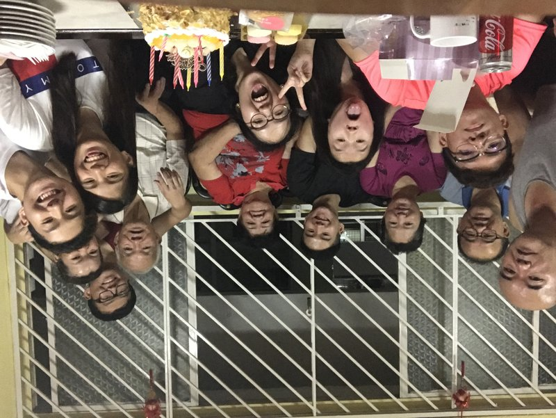
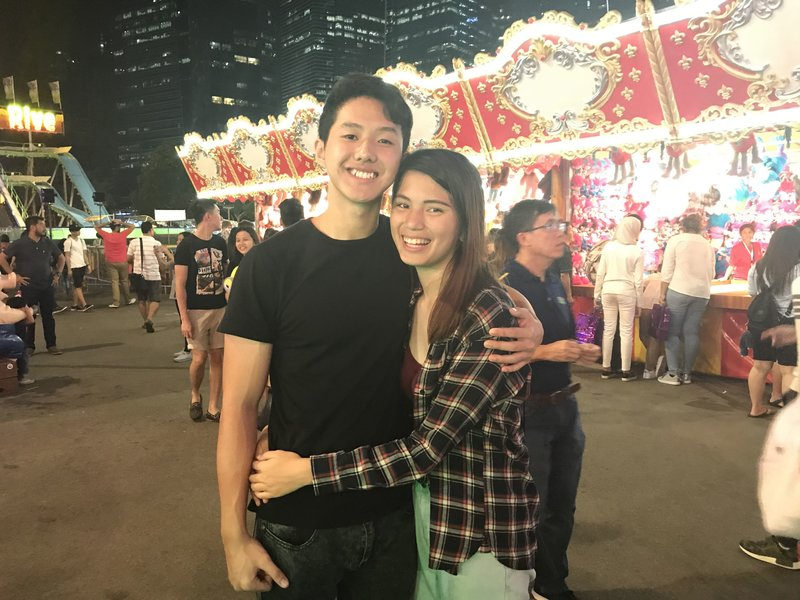
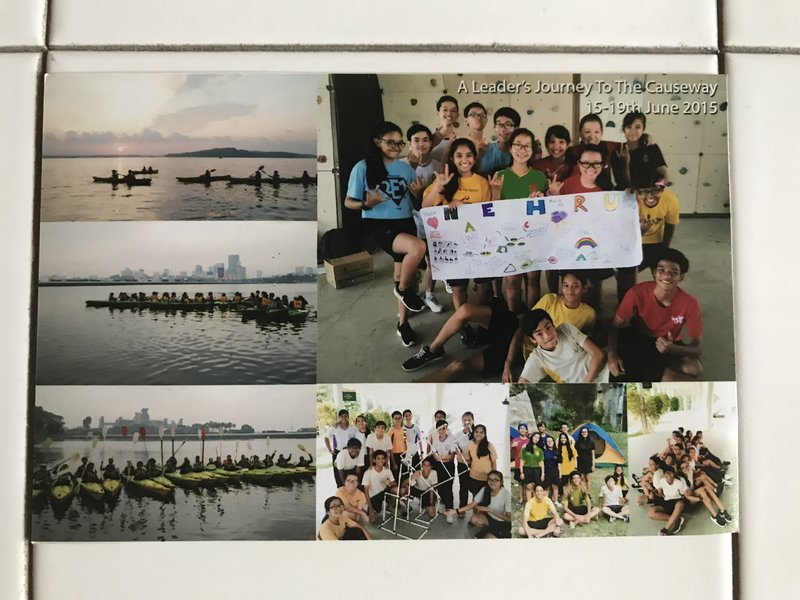

Important people to me

• I come from a relatively big family and I regard all of them as important people in my life (My grandparents,my parents,my siblings, my aunts and uncles as well as my cousins) They have been there for me whenever I needed them which is why they hold a very significant place in my heart.
.jpg)
• I have a few close friends who I spend my free time with and I regard them as important people in my life. They are Liu Cong, Yong Xiang, Effan, Kennard, Jacob, Ronn, Russell and Kenneth. They are definitely who I can call "brothers from another mother"

• The other person that I hold very very dearly to is my girlfriend. She has played a very big part in my life. She made me change for the better and always am a source of motivation and support to me. She is also always there for me just like my family, and went through all my difficulties with me. That is why she is so important to me.
Important events that occured
• The first event that I find important is my PSLE. As I did not do as good as I wanted to, I regret not putting in as much effort. And I learnt from that event that I have to put in my 100% in everything if I really want something. The event also taught me that I cannot be overconfident and must know my limits.

• The second event that I thought was important to me was my trip to Outward Bound Singapore (OBS). That was a Leadership camp at OBS which took place on the 15-19th of June 2015. I find that important as it made me experience something one-of-a-kind (by pushing me to my physical and mental limit) and as well as allowing me to discover more about myself (the hidden capability that I weren't aware of). The event changed me to be a better and a more driven person than I was before.